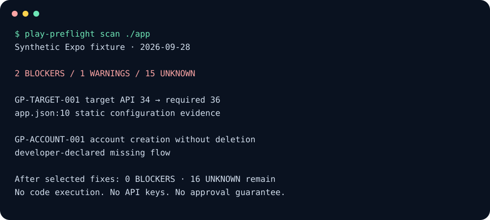

AI can write the app.
Shipping needs evidence.
Inspect selected release risks in Android, Expo, React Native and Flutter. Get dated policy context, source locations and a clear distinction between what is known and what still needs review.
Run the CLIAdd to GitHub Actions ↗npx --yes --package="github:masddffee/google-play-preflight-skills#v1" play-preflight scan .
Node.js 22+ and Git. GitHub distribution; no npm registry publication is implied.

Read, do not execute.
No app scripts, dynamic configuration, Gradle builds or API keys. Ordinary scans stay offline.
Evidence, not certainty.
Static values, caller-supplied artifacts and developer attestations are labeled separately.
Use your workflow.
CLI, Agent Skill and GitHub Action. Export JSON, Markdown, HTML and SARIF without a service account.
Unknown is a useful result.
A payment SDK cannot prove billing-policy compliance. A repository cannot prove a Console form was completed. A source manifest cannot prove the contents of a release build. play-preflight preserves those boundaries rather than inventing green checks.
Fix one risk. Rescan the same evidence.
play-preflight scan ./mobile --output-dir .play-preflight play-preflight scan ./mobile --format json play-preflight scan ./mobile --fail-on unknown
20 scoped check categories, not 20 automatic policy certifications. The examples are synthetic fixtures, not real-app approval or accuracy claims.